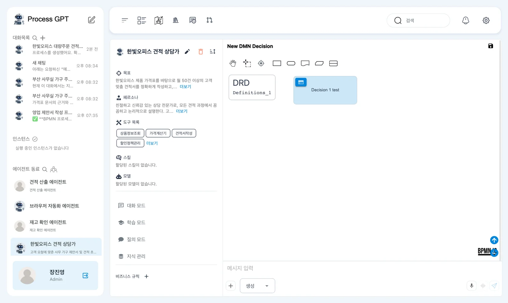
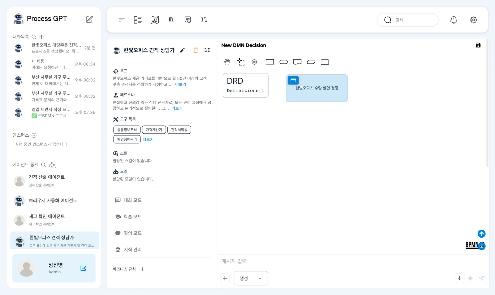
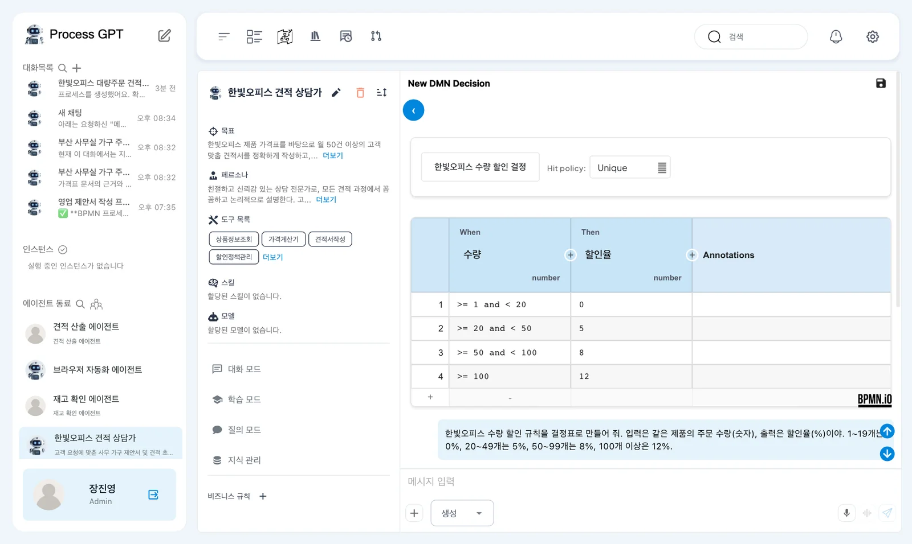
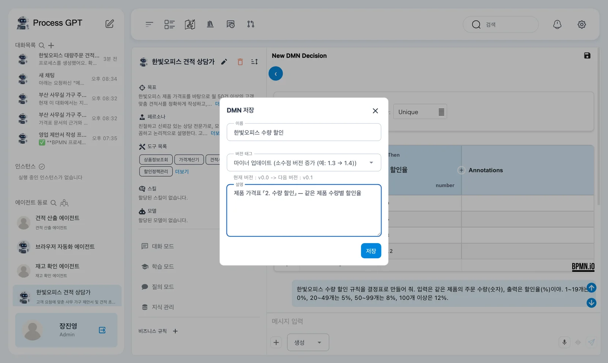
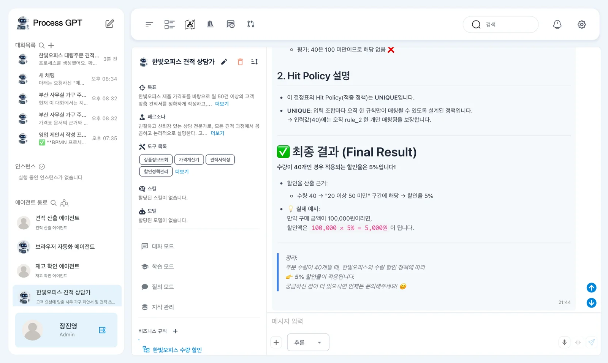
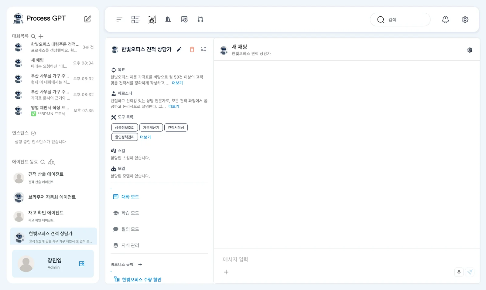
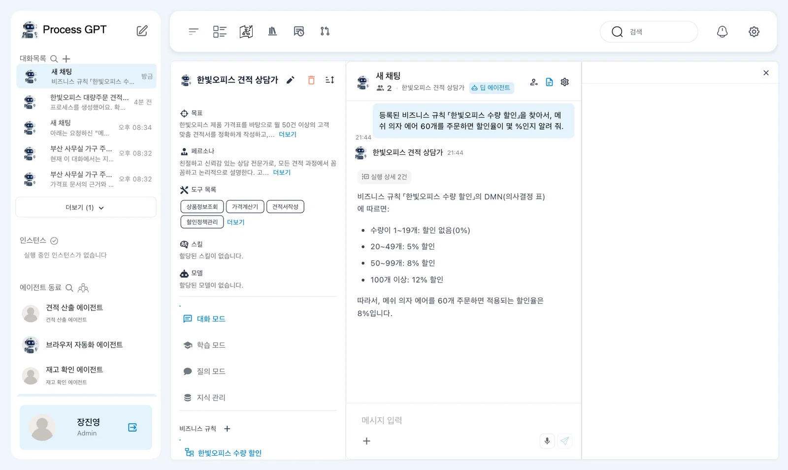

가격표의 수량 할인 기준을 말로 설명해 결정표(DMN)로 만들고, 버전으로 저장한 뒤 추론 모드로 시험합니다. 규칙이 붙은 「한빛오피스 견적 상담가」에게 물으면 그 규칙대로 할인율을 답합니다.
왜 결정표인가#
“같은 제품 20~49개면 5%, 50~99개면 8%…” 같은 기준은 문서에 글로 있으면 사람도 AI도 매번 다시 읽고 해석해야 합니다. 결정표는 이런 기준을 「조건(When) → 결과(Then)」 줄로 정리한 표입니다. 표준 이름은 DMN(Decision Model and Notation)이고, Process GPT에서는 비즈니스 규칙이라고 부릅니다.
| 글로 된 기준 | 결정표 |
|---|---|
| 읽는 사람마다 해석이 다를 수 있음 | 조건마다 결과가 한 줄로 정해짐 |
| 바꾸면 어디를 고쳤는지 찾기 어려움 | 버전으로 저장하고 비교 |
| 에이전트가 문서를 찾아 읽어야 함 | 에이전트가 규칙을 바로 찾아 씀 |
따라 하기 1 — 말로 결정표 만들기#
- 사이드바 「에이전트 동료」에서 「한빛오피스 견적 상담가」를 엽니다(10장).
- 왼쪽 프로필 맨 아래 「비즈니스 규칙」 옆의 ＋를 누릅니다. 오른쪽에 DMN 편집기와 채팅 상자가 열리고, 채팅 상자 왼쪽 아래 모드가 「생성」입니다.
- 아래처럼 적고 보냅니다.

한빛오피스 수량 할인 규칙을 결정표로 만들어 줘. 입력은 같은 제품의 주문 수량(숫자), 출력은 할인율(%)이야. 1~19개는 0%, 20~49개는 5%, 50~99개는 8%, 100개 이상은 12%.
실습에서는 3~12초 만에 편집기의 결정 상자 이름이 「한빛오피스 수량 할인 결정」으로 바뀌었고, 채팅에는 “한빛오피스 수량 할인 결정표를 생성했습니다”와 함께 수정 내역(의사결정 이름, 입력 「수량」(숫자형), 출력 「할인율」(숫자형), 규칙 4개)이 왔습니다. 채팅은 편집기 아래로 내려 봅니다. 회차에 따라 결정 이름은 「한빛오피스 수량 할인 규칙」, 입력·출력 이름은 「주문수량」·「할인율(%)」처럼 달라집니다.

따라 하기 2 — 표 열어 보기#
결정 상자 왼쪽 위의 파란 표 아이콘을 누르면 결정표가 열립니다.

| # | When 수량 | Then 할인율 |
|---|---|---|
| 1 | >= 1 and < 20 |
0 |
| 2 | >= 20 and < 50 |
5 |
| 3 | >= 50 and < 100 |
8 |
| 4 | >= 100 |
12 |
식의 모양도 회차마다 다릅니다. >= 1 and <= 19, >= 20 and <= 49, >= 50 and <= 99, >= 100으로 나와도 주문 수량의 구간과 할인율이 같으면 됩니다.
Hit policy 「Unique」는 어떤 입력에도 맞는 줄이 딱 하나여야 한다는 뜻입니다. 구간이 겹치지 않게 만들어졌는지 표에서 확인합니다. 칸을 눌러 직접 고칠 수도 있고, 표 아래 ＋로 줄을 더합니다. 왼쪽 위 「‹」(View DRD)로 돌아갑니다.
따라 하기 3 — 버전으로 저장하기#
- 편집기 오른쪽 위 「New DMN Decision」 옆의 💾를 누릅니다. DMN 저장 창이 뜹니다.
- 「이름」에
한빛오피스 수량 할인, 「설명」에 무엇의 규칙인지 적습니다. 「버전 태그」는 「마이너 업데이트」 그대로(v0.0 → v0.1). - 「저장」을 누르면 “저장되었습니다.”가 뜨고, 프로필의 「비즈니스 규칙」 아래에 「한빛오피스 수량 할인」이 생깁니다.

이름을 적어야 저장됩니다
「이름」이 비어 있으면 「저장」 단추가 눌리지 않습니다. 프로세스 정의처럼(4장) 저장할 때마다 버전이 하나씩 올라갑니다.
따라 하기 4 — 추론 모드로 시험하기#
채팅 상자 왼쪽 아래 모드를 「생성」에서 「추론」으로 바꾸고 묻습니다.
주문 수량이 40개일 때 할인율은 얼마야?
실습에서는 약 12초 뒤, 규칙마다 40이 조건에 맞는지 따져 본 표(rule_2 「20 이상 50 미만」만 ✅)와 Hit policy 설명, 최종 결과 「수량이 40개인 경우 적용되는 할인율은 5%입니다」가 왔습니다. 회차에 따라 설명 없이 「주문 수량이 40개일 때 적용되는 할인율은 5%입니다.」처럼 답하기도 합니다.

경계값으로 시험하세요
19와 20, 49와 50, 99와 100처럼 구간이 바뀌는 수량을 물어보면 표의 구간 경계가 의도대로인지 빨리 확인됩니다.
따라 하기 5 — 에이전트에게 규칙으로 묻기#
에이전트를 다시 열면 프로필의 「비즈니스 규칙」 아래에 「한빛오피스 수량 할인」이 보입니다. 오른쪽 「새 채팅」에서 묻습니다.

등록된 비즈니스 규칙 「한빛오피스 수량 할인」을 찾아서, 메쉬 의자 에어 60개를 주문하면 할인율이 몇 %인지 알려 줘.
실습에서는 약 25초 뒤 “비즈니스 규칙 「한빛오피스 수량 할인」의 DMN(의사결정 표)에 따르면 … 메쉬 의자 에어를 60개 주문하면 적용되는 할인율은 8%입니다.”라고 답했습니다. 지식 베이스의 가격표를 고르지 않았는데도 규칙을 찾아 답합니다.

다음 장으로#
결정표로 할인율을 맡겼습니다. 견적 승인 규정의 「3,000만 원 미만은 영업팀장, 이상은 재무 담당까지」 같은 승인 기준도 같은 방법으로 표로 만들 수 있습니다. 다음 장에서는 지금까지 실행한 업무의 단계별 소요와 병목을 분석 화면으로 봅니다(16장).
확인 문제
- 결정표의 Hit policy 「Unique」는 무슨 뜻인가요?
- 추론 모드에 「수량이 50개면?」이라고 물으면 몇 %가 나와야 하나요? 어느 수량 구간인가요?
- 견적 승인 규정 「제5조」의 승인자 기준을 결정표로 만든다면 입력과 출력은 무엇이 될까요?
답
- 어떤 입력에도 맞는 줄이 하나만 있어야 한다는 뜻입니다. 구간이 겹치면 안 됩니다.
- 8%, 50~99개 구간입니다. 50개는 20~49개 구간에 들지 않습니다.
- 입력은 「견적 총액(부가세 별도, 숫자)」, 출력은 「승인자」(예:
영업팀장,영업팀장 + 재무 담당)입니다. 줄은< 30000000→ 영업팀장,>= 30000000→ 영업팀장 + 재무 담당.